// Case Study
Three Data
Centers
Built ground up in Lansing, Michigan — owner side, full lifecycle. I selected the sites, drew the floor plans by hand, designed the power chain from the utility feed to the branch circuit, managed the contractors and the utility, ran commissioning, and then operated the buildings for the next decade.
// Scope
What I owned
On all three buildings I held the full project lifecycle: site selection and real estate, floor plan and system design, equipment evaluation and purchasing, contractor and utility management, permitting, commissioning, and the operations afterward. There was no owner's representative between me and the work — I wrote the scope, hired the trades, and then lived in the result.
The largest was an $80M ground-up build served by a utility substation constructed to support it. That interconnection drove the schedule for the entire project, which is the single thing I would tell anyone building in Michigan today.
Site & program
Site selection and real estate. Hand-drew every floor plan — siting the mechanical, electrical and network rooms, then laying out rack rows, containment, and cable pathways around them.
Procurement
Equipment evaluation and purchasing across every build, including long-lead items. Negotiated the utility, generator, UPS and switchgear contracts directly.
Delivery
Managed all general and trade contractors and the permitting process on each project, through commissioning and turnover into live operation.
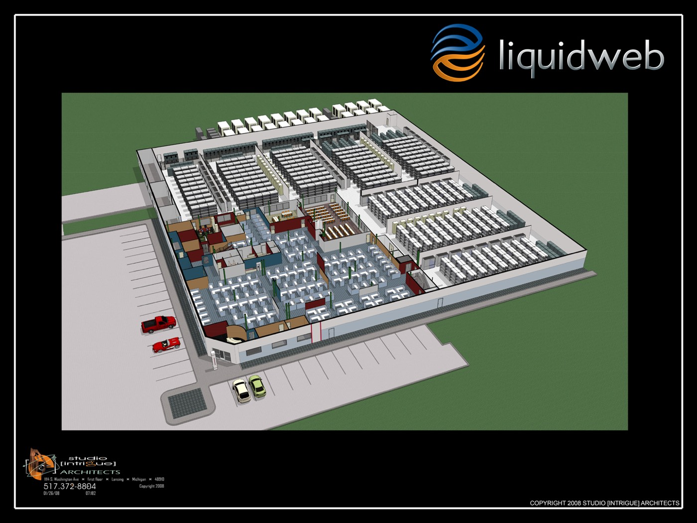
// Critical Power
Utility feed to branch circuit
I designed the complete power chain on each facility, at topologies up to 2N+1, and specified and purchased the equipment that made it up.
Single-line: 13.8kV utility service through metered rack-level branch circuit monitoring.
Distribution
13.8kV utility service, step-down transformers, 480V three-phase distribution, automatic transfer switch, diesel standby generation, UPS at N+1, PDUs, and metered rack-level branch circuit monitoring.
Topology & gear
Redundancy to 2N+1. Switchgear, paralleling, and maintenance bypass. VRLA battery plants, with flywheel storage evaluated as an alternative.
Quality & safety
Power factor and harmonics, arc flash hazard, selective coordination, grounding and bonding — carried through design, construction and the operating procedures afterward.
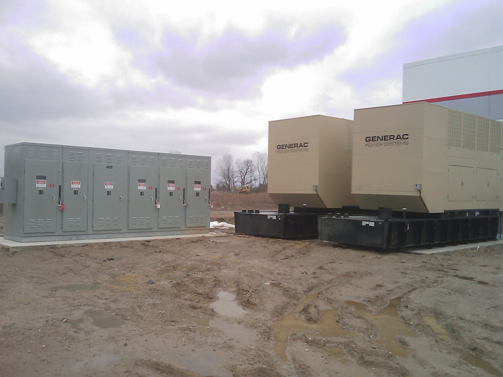
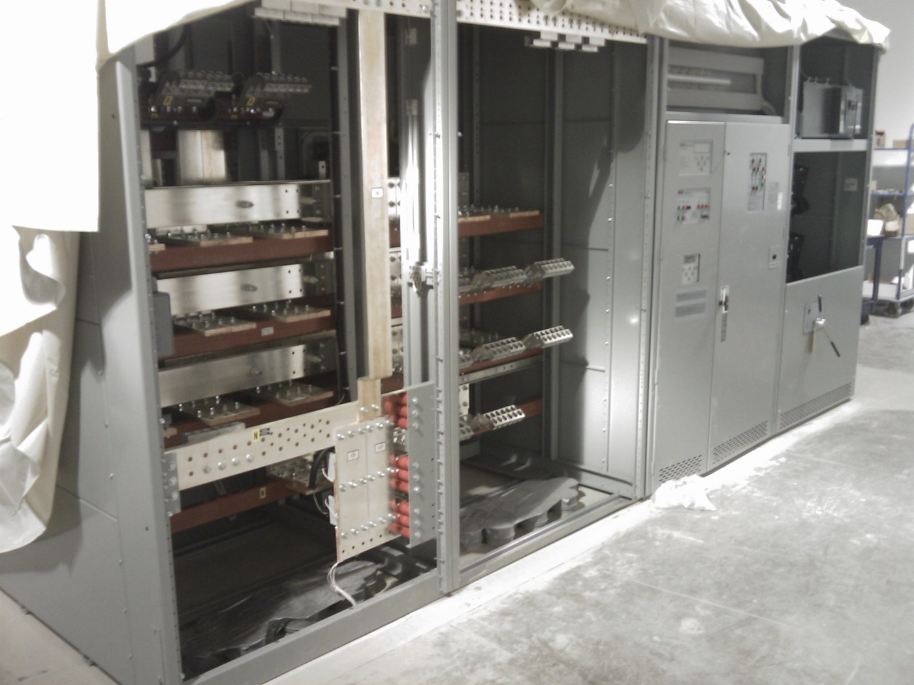
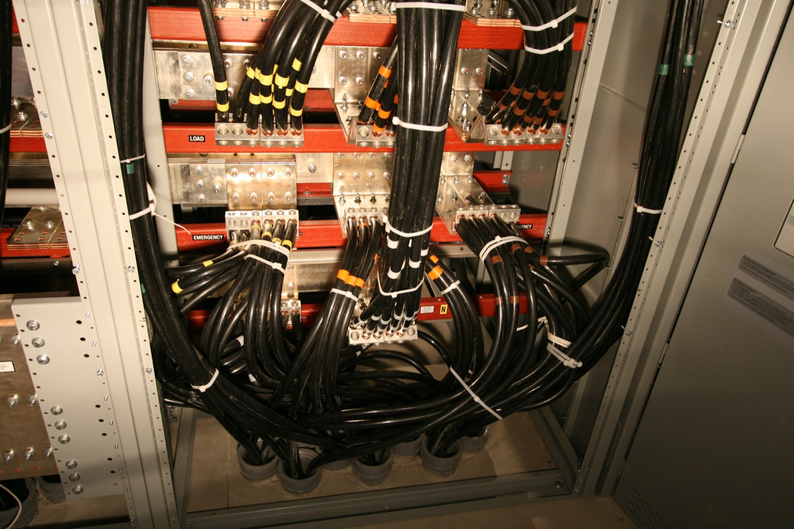
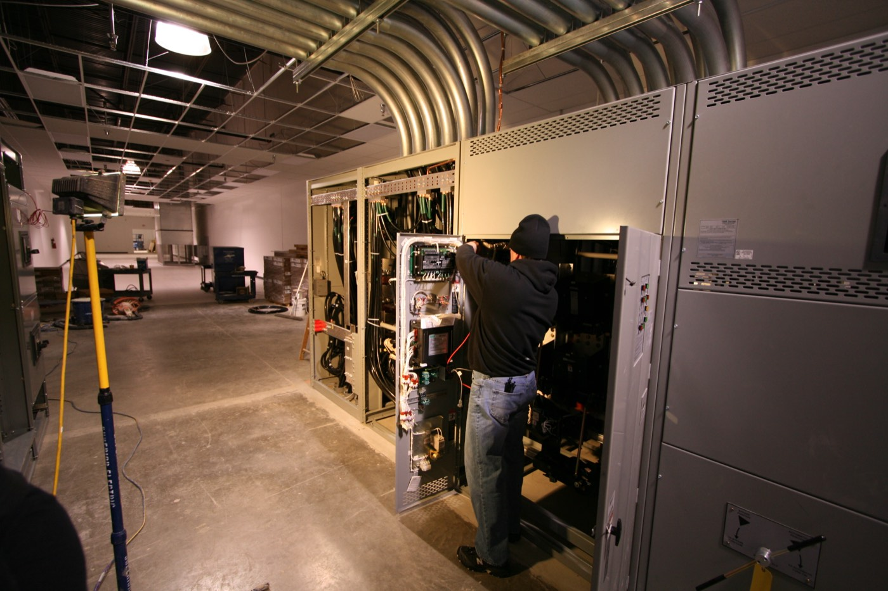
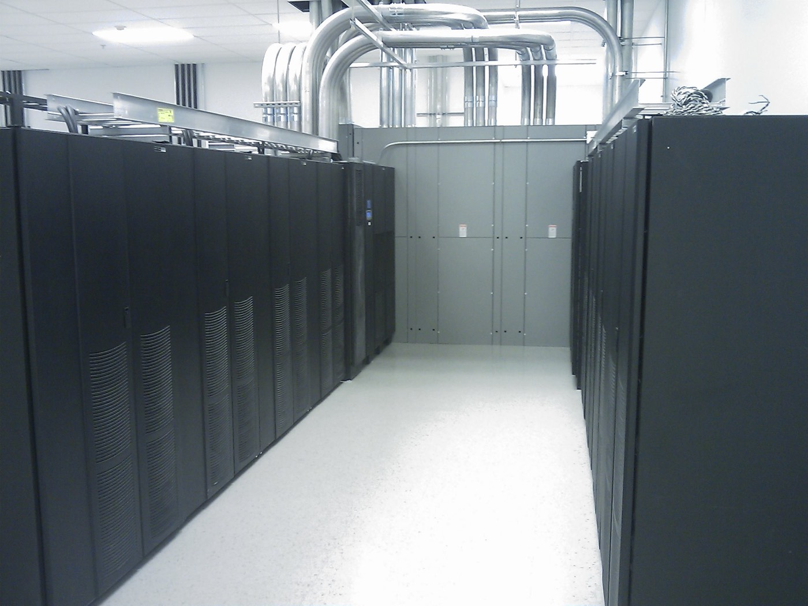
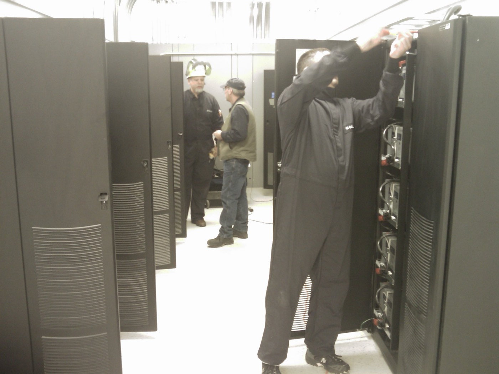
// Mechanical, Monitoring & Security
Keeping it cool, and knowing when it isn't
HVAC and heat rejection design for the data halls, including the redundancy scheme and the failure modes that scheme is supposed to survive.
I built the facilities telemetry and monitoring from scratch — UPS, cooling, environmental and physical security systems, with custom internal tooling for alerting and reporting. Nothing off the shelf did what we needed at the time, so we wrote it.
Heat rejection
Data hall HVAC and heat rejection design, redundancy planning, and the failure-mode analysis behind it.
Telemetry
Facilities monitoring built in-house across UPS, cooling and environmental systems, with custom alerting and reporting tooling.
Physical security
Access control and camera systems, and the operational procedures wrapped around them.
// Network
The highest-capacity network in Lansing
A carrier-grade network built from nothing. I sourced dark fiber IRUs, connected to the local ILEC over a DWDM ring, and extended lit services to upstream providers in larger metros.
BGP with full tables at the border, EIGRP internally, IX peering, ARIN allocations and AS numbers, and Arbor Networks DDoS mitigation. I owned the whole lifecycle here too — provider selection, contract negotiation, procurement, Cisco and Arista configuration, fiber termination, and monitoring through Cacti, SNMP and Netflow.
// Operations & Compliance
Staffing three buildings in a market with no data center labor pool
Michigan had no existing data center workforce to hire from — a problem the state is about to rediscover at much larger scale. I recruited, hired and trained the operations teams for all three facilities, and built the management structure they ran inside.
Across the estate I led the compliance programs — SSAE16/SAS70, HIPAA and PCI DSS — covering audits, SLAs and policy.
// In the Field
I could do the work
When you're building from nothing, you do whatever needs doing. I drywalled the first data center, core-drilled concrete for fiber runs, and terminated copper.
That isn't a boast about hours worked. It's why I could read a schedule and tell whether it was real, and why the trades took the drawings seriously.
// Documentation
From the build
Construction-phase photographs from the Lansing facilities.
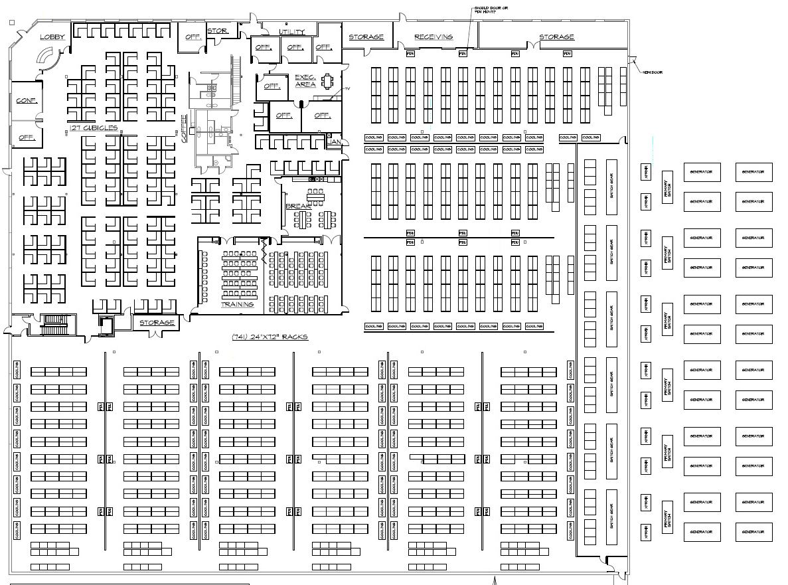
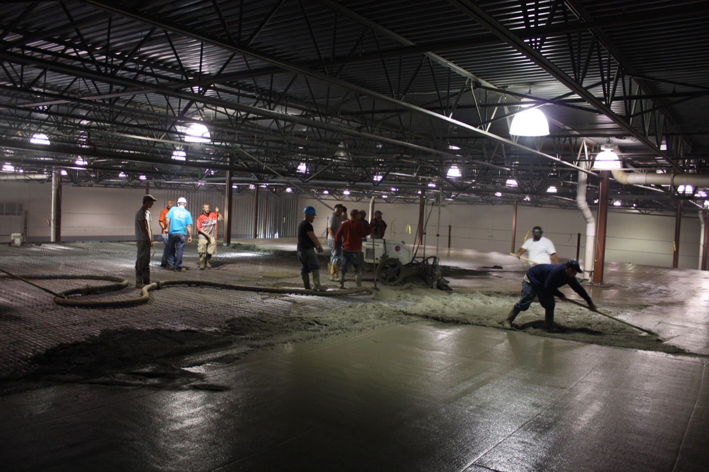
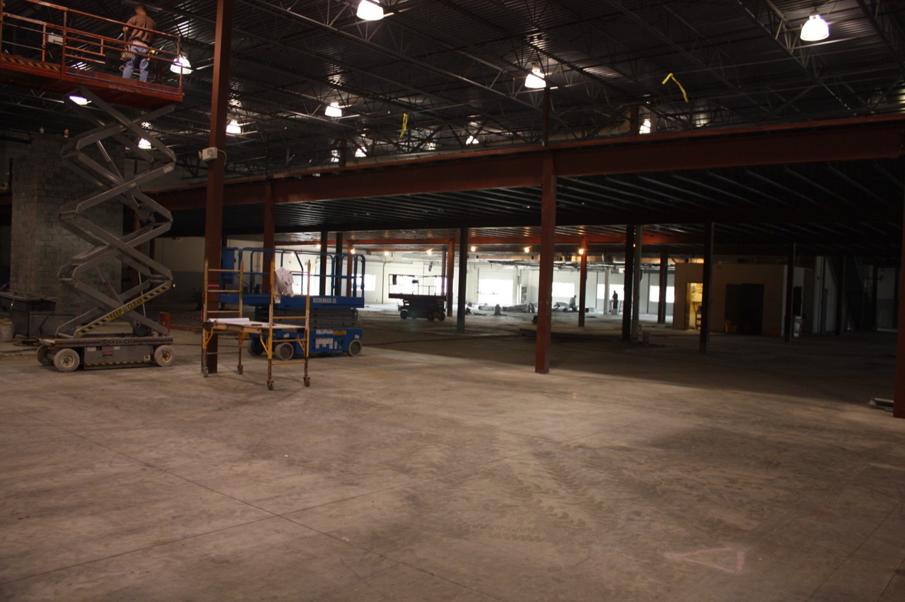
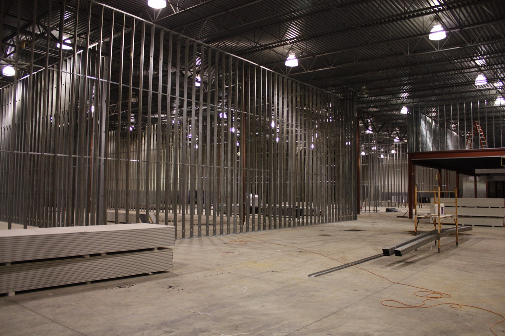
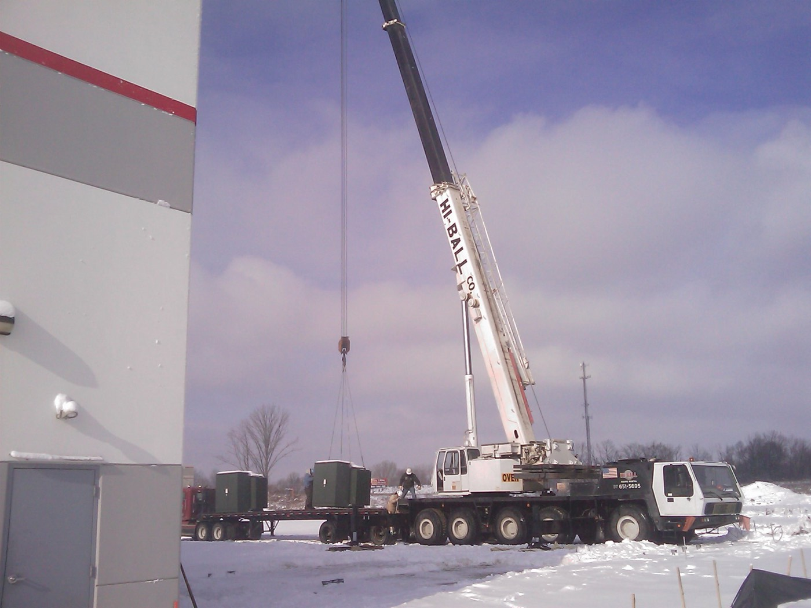
Michigan is building again.
Saline Township, Augusta Township, Grand Rapids. I built here before there was a market for it, and I'm still here.